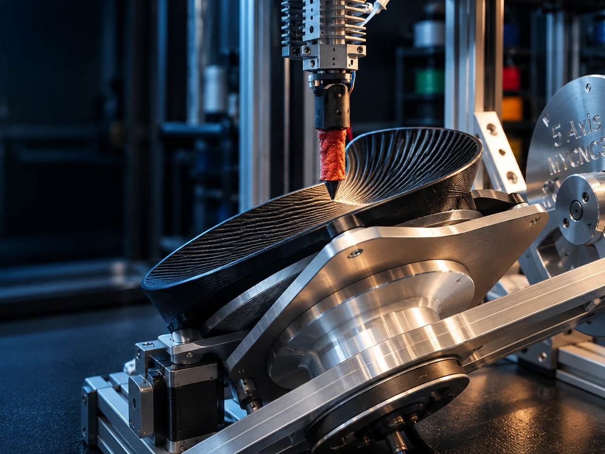

Maschinenkinematik
Bewertung alternativer Mehr-Achs-Architekturen und ihrer praktischen Fertigungsräume.
Maschinenarchitekturen entwickeln, die den Polymerauftrag über herkömmliche ebene Bewegungen hinaus erweitern.
MYCNC3D untersucht Architekturen für die mehrachsige additive Fertigung, bei denen Maschinenkinematik, Auftragsorientierung und Werkzeugbahngenerierung als Bestandteile eines gemeinsamen Systems entwickelt werden.

Projektüberblick
Die Arbeit ist über die Konzeptphase hinaus und umfasst die aktive Entwicklung von Maschinenarchitekturen, Kinematik, Bewegungssteuerung und Werkzeugbahnintegration. MYCNC3D untersucht Systeme für die additive Fertigung, in denen zusätzliche Freiheitsgrade die Ausrichtung des Materialauftrags über die konventionelle planare XY-Bewegung hinaus steuern können.
Die Forschung konzentriert sich auf Maschinenkinematik, koordinierte Achsbewegungen, Auftragsorientierung, Kalibrierung, Koordinatentransformation, Werkzeugfreigang, Maschinenlimits und die Integration fortschrittlicher Software zur Trajektoriengenerierung. Ziel ist nicht, einfach weitere Maschinenachsen hinzuzufügen, sondern Architekturen für nutzbare Fertigungsstrategien zu entwickeln, die mit herkömmlichem planarem FDM nicht möglich sind.
Derzeit werden verschiedene Mehr-Achs-Architekturen verglichen und die erforderlichen Software-zu-Maschine-Abläufe für einen koordinierten Materialauftrag entwickelt. Die physische Validierung eines vollständig integrierten Mehr-Achs-Auftragssystems steht noch aus.
Warum dieses Thema wichtig ist
Die Ausrichtung der abgelegten Raupe beeinflusst Geometrie, Zugänglichkeit, Oberflächenbildung und möglicherweise das mechanische Verhalten. Mehr-Achs-Bewegungen eröffnen die Möglichkeit, die Auftragsrichtung lokal auszurichten, statt jedes Bauteil in eine einzige globale Schichtebene zu zwingen.
Diese Freiheit bringt technische Herausforderungen mit sich: Koordinatentransformationen, Kalibrierung, Achsgrenzen, Maschinenfreigang, Kollisionsrisiken und die Synchronisierung von Materialfluss und komplexen Bewegungen.
Aktueller Schwerpunkt
Bewertung alternativer Mehr-Achs-Architekturen und ihrer praktischen Fertigungsräume.
Synchronisierung mehrerer Achsen bei gleichmäßiger und kontrollierbarer Ablage.
Steuerung der lokalen Werkzeug- und Auftragsorientierung relativ zur Bauteilgeometrie.
Zuverlässige geometrische Beziehungen zwischen Achsen, Werkzeug und Werkstück.
Berücksichtigung von Düse, Werkzeugkopf und Maschinenraum.
Verknüpfung der Maschinenfähigkeiten mit einer an die Kinematik angepassten Trajektoriengenerierung.
Technischer Ansatz
Der Entwicklungsprozess verbindet kinematische Modellierung, Maschinenkonfiguration, Werkzeugbahngenerierung und physische Druckversuche. Jede Systemebene wird im Zusammenspiel mit den anderen bewertet und nicht isoliert entwickelt.
Aktueller Stand
Die Arbeiten entwickeln aktiv Maschinenarchitektur, Kinematik, Bewegungssteuerung und Werkzeugbahnintegration weiter. Die physische Validierung eines vollständig integrierten Mehr-Achs-Auftragssystems ist ein kommender Entwicklungsschritt.
Nächster Meilenstein
Der nächste Meilenstein ist eine Referenzmaschinenarchitektur mit wiederholbarer Kalibrierung, zuverlässiger Koordinatentransformation, kontrollierter Mehrachsbewegung und einem stabilen Software-zu-Maschine-Ablauf.
Der Übergang zur VALIDIERUNG erfordert eine physische Demonstration integrierten mehrachsigen Auftrags an repräsentativen Geometrien sowie einen systematischen Umgang mit Maschinenlimits, Werkzeugfreigang und Kollisionsbedingungen.
Integrierte Plattform
Mehr-Achs-FDM-Architekturen wird gemeinsam mit den anderen Technologien der MYCNC3D-Plattform entwickelt.
Zusammenarbeit
MYCNC3D ist offen für technische Gespräche mit Anbietern von Bewegungssteuerungen, Robotikspezialisten, Werkzeugmaschinenpartnern, Forschungseinrichtungen und Industrieanwendern, die sich für mehrachsigen Polymerauftrag interessieren.